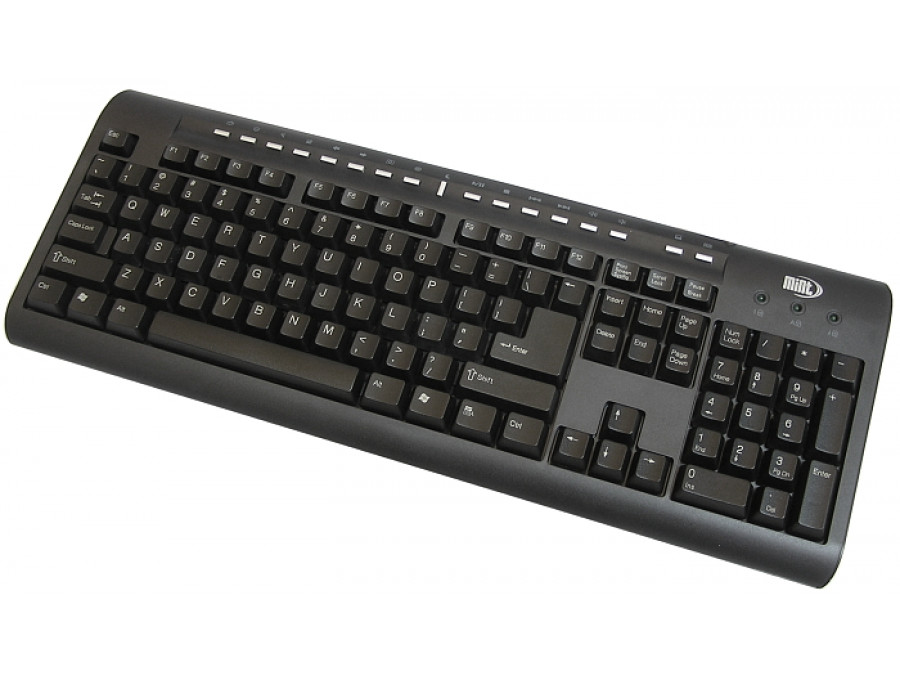

Urządzenia peryferyjne
Klawiatura
 Klawiatura komputerowa – uporządkowany zestaw klawiszy służący do ręcznego sterowania urządzeniem lub ręcznego wprowadzania danych. W zależności od spełnianej funkcji klawiatura zawiera różnego rodzaju klawisze – alfabetyczne, numeryczne, znaków specjalnych, funkcji specjalnych, o znaczeniu definiowanym przez użytkownika.Klawiatury występują w najróżniejszych urządzeniach domowych – klawiszowych instrumentach muzycznych, kalkulatorach, telefonach, tokenach; w szczególności jest to jeden z podzespołów wejściowych komputera. Aktualnie używane modele klawiatur komputerowych mają około 100 klawiszy.
Coraz częściej w klawiatury komputerowe wbudowuje się dodatkowe elementy sterujące (gładzik, dodatkowe przyciski, pokrętła, suwaki i inne), kontrolne (diody LED) i inne (np. czytnik kart pamięci, porty USB, gniazda do zestawu słuchawkowego) – najczęściej do obsługi multimediów.
Monitor
 Monitor komputerowy – ogólna nazwa jednego z urządzeń wyjścia do bezpośredniej komunikacji użytkownika z komputerem. Zadaniem monitora jest natychmiastowa wizualizacja wyników działania programów uruchomionych na komputerze.
Monitor komputerowy – ogólna nazwa jednego z urządzeń wyjścia do bezpośredniej komunikacji użytkownika z komputerem. Zadaniem monitora jest natychmiastowa wizualizacja wyników działania programów uruchomionych na komputerze.
Obecnie używane monitory to ekrany komputerowe, obsługiwane przez komputer zwykle za pośrednictwem karty graficznej, która jest elementem komputera bądź może być wbudowana w sam monitor.
Od momentu zagoszczenia komputerów w domach, jako komputery domowe, do ich obsługi używane były monitory CRT, ewentualnie zwykłe telewizory oparte na tej samej technologii. Od około 2005 roku rynek monitorów został zdominowany przez monitory LCD, które nie wytwarzają tak intensywnego pola elektromagnetycznego i zajmują wielokrotnie mniej miejsca na biurkach. W najtańszych modelach sygnał jest jednak nadal przesyłany analogowo przez złącze D-Sub. Bardziej bogato wyposażone modele posiadają gniazda cyfrowe, takie jak DVI, HDMI lub DisplayPort, pozwalające uzyskać znacznie lepszą jakość obrazu i wyższe rozdzielczości.
Mysz
 Mysz komputerowa, myszka – urządzenie wskazujące używane podczas pracy z interfejsem graficznym systemu komputerowego.
Mysz umożliwia poruszanie kursorem po ekranie monitora poprzez przesuwanie jej po powierzchni płaskiej. Mysz odczytuje zmianę swojego położenia względem podłoża i wysyła ją w formie danych cyfrowych do komputera, który dokonuje odpowiedniej zmiany położenia kursora na ekranie.
Najczęściej wyposażona jest w dwa przyciski i kółko do przewijania ekranu, które może również pełnić rolę trzeciego przycisku.
Mysz komputerowa, myszka – urządzenie wskazujące używane podczas pracy z interfejsem graficznym systemu komputerowego.
Mysz umożliwia poruszanie kursorem po ekranie monitora poprzez przesuwanie jej po powierzchni płaskiej. Mysz odczytuje zmianę swojego położenia względem podłoża i wysyła ją w formie danych cyfrowych do komputera, który dokonuje odpowiedniej zmiany położenia kursora na ekranie.
Najczęściej wyposażona jest w dwa przyciski i kółko do przewijania ekranu, które może również pełnić rolę trzeciego przycisku.